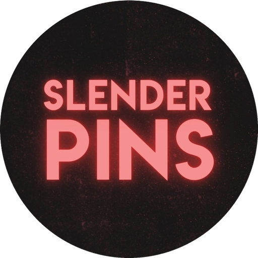

Slender Pins
An underground rock band from London, UK.
Slender Pins make post-punk, big beat and surf rock with bombastic dance-rock energy and a hint of post-punk menace. Their songs draw on disco, surf rock and new wave, and their live shows are known for the eccentric, Dadaist stage presence of frontman Ash. Since 2024 the band has been working on a self-produced EP, Hell Is Nervous.
About
Slender Pins are Ash (vocals), Alex (guitar), Ed (drums) and Dan (bass). Songwriting is by Alex and Ash. Their influences include the Stooges, the Velvet Underground and Gang of Four. Their lyrics draw on historical and artistic references to sketch out the absurdity of modern life.
Their music has been supported by BBC Music Introducing, This Feeling and Amazing Radio.
Listen
- Get Your Hooks In Me (lead single, 2025)
- So Happy (90% Of The Time)
- Apprentice To Life
Watch: video on Facebook. The "Get Your Hooks In Me" video was filmed at Dublin Castle, Camden.
Press
- Clunk Magazine: Slender Pins, "Apprentice to Life"
- Silent Radio: London 4-piece Slender Pins unveil video for new single "Apprentice to Life"
- God Is In The TV: Interview and introduction
- RAMzine: The Alchemy of Slender Pins
- TV Obsessive: Who To Watch For in 2021: Slender Pins
- Gigradar: Introducing Slender Pins
Contact
Bookings and press: slenderpins@gmail.com